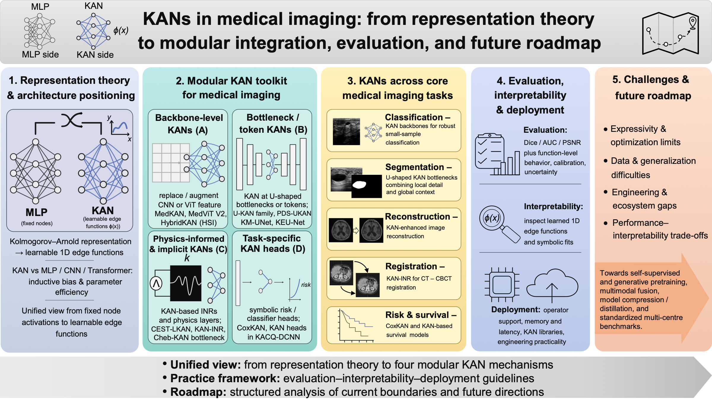
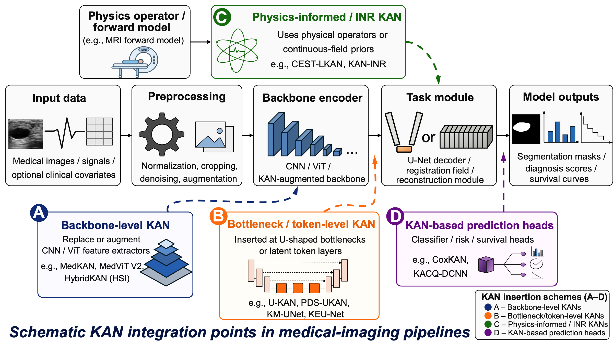

Interactive Evidence Landscape (Click Any Cell to Filter Studies)
Every number below is linked directly to Supplementary Table S1. Click any matrix cell or modular paradigm card to inspect the exact underlying studies.
Whole-Model Direction × KAN-Specific Contribution Evidence
Separating reported full-model gains from controlled evidence isolating the KAN module
Primary Medical Task × Modular Integration Placement (A–D)
Distribution of 138 independent studies across clinical imaging tasks and architectural depths
Four Modular KAN Integration Paradigms (Section 3.1)
Click any paradigm card to browse all corresponding studies in the 138-Study Explorer.
Paper Architecture & Framework Figures (Figs. 4 & 7)
High-resolution schematic diagrams rendered directly from our original vector manuscript figures


Reproducible Retrospective Evidence Reconstruction (PRISMA Audit Trail)
Auditable path from 4 bibliographic APIs (Supplementary Table S3) through title/abstract screening (S4) and full-text reconciliation (S2) to the 138-study matrix (S1).
138-Study Auditable Evidence Explorer (Supplementary Table S1)
Filter across architectural placement, task, modality, whole-model direction, and KAN-specific attribution rigor. Export any filtered subset for meta-research.
KAN Edge-Function & Physical Prior Interactive Sandbox
Explore how KANs move learnable nonlinearities from nodes to edges φ(x), why domain-aligned bases (e.g., Lorentzian for CEST-MRI, Chebyshev for MRI k-space, Jacobi for INR registration) act as testable priors, and how basis parameters affect complexity.
1. Select Edge-Basis Family
Compare general spline bases with physics-aligned & fast approximations
2. Interactive Basis Controls
Learnable Edge Function φ(x) vs. Fixed Node Activation
Order-of-Magnitude Parameter & Compute Estimator (Section 2.3.5)
Compare idealized MLP O(L·w²) vs. Dense KAN O(L·w²·(G+p)) parameter scaling — illustrating why matched channel width ≠ matched parameter budget
Hypothesis-Selection Advisor & 4-Part Reporting Checklist Generator
Operationalizing Figure 8 and Section 4.4 of the review: configure your medical imaging study conditions to select a defensible KAN hypothesis, then generate a ready-to-paste Markdown reporting table for your paper or rebuttal.
Configure Your Study Conditions (Fig. 8)
Select data scale, audit priority, physical priors, and deployment constraints
Recommended Experimental Design & Required Controls
Guidance for falsifiable hypothesis testing (not a clinical deployment endorsement)
4-Part Minimum Reporting Standard Checklist (Section 4.4)
Check items fulfilled by your experiment and add brief notes to export a standardized Markdown table for your paper's supplementary material or GitHub README.